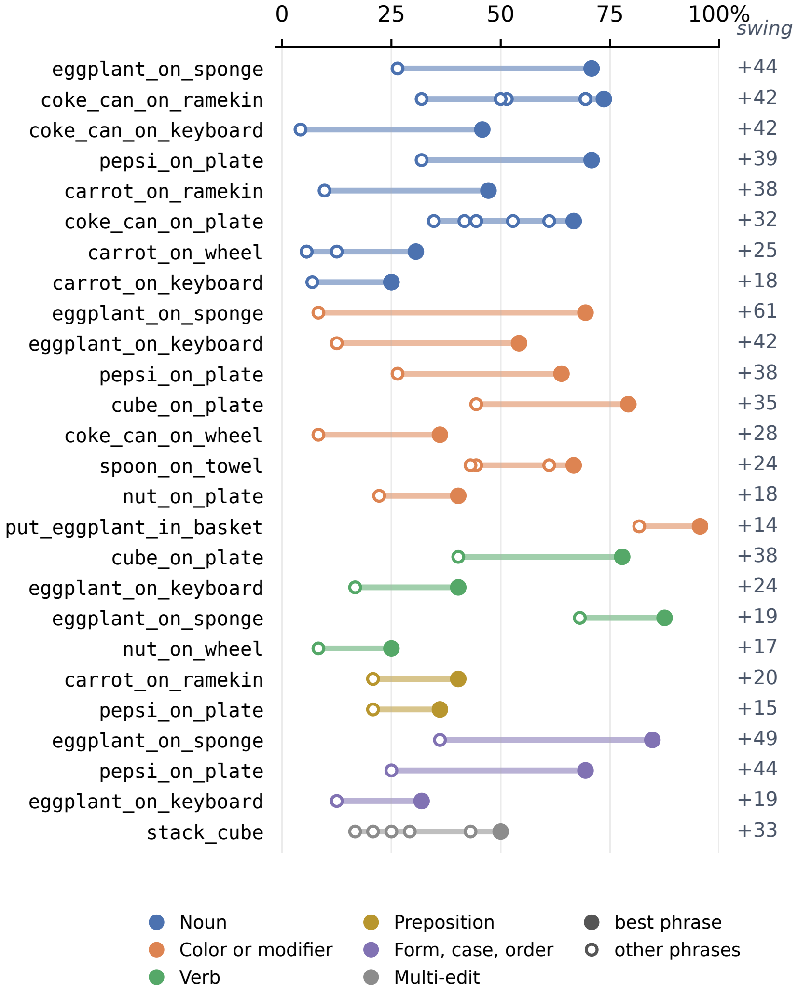
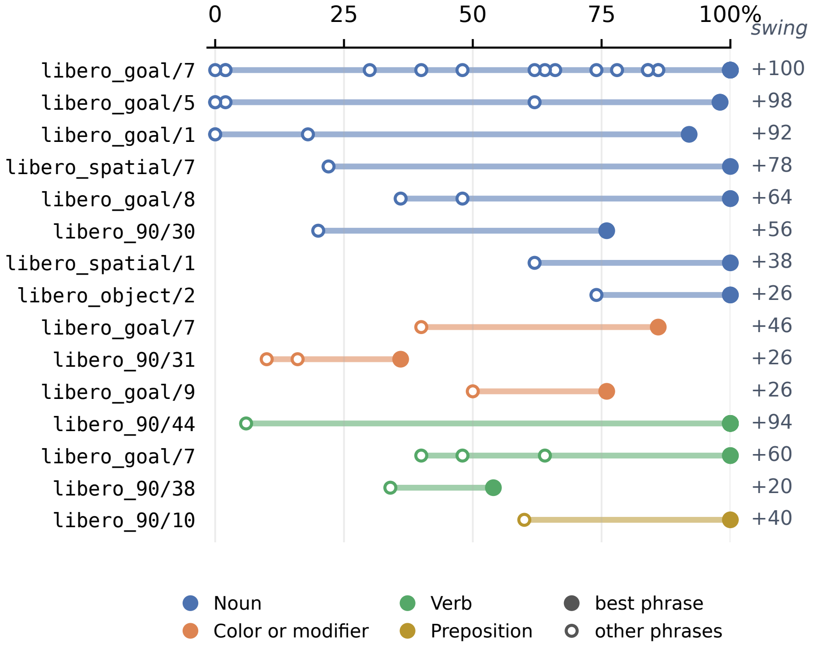
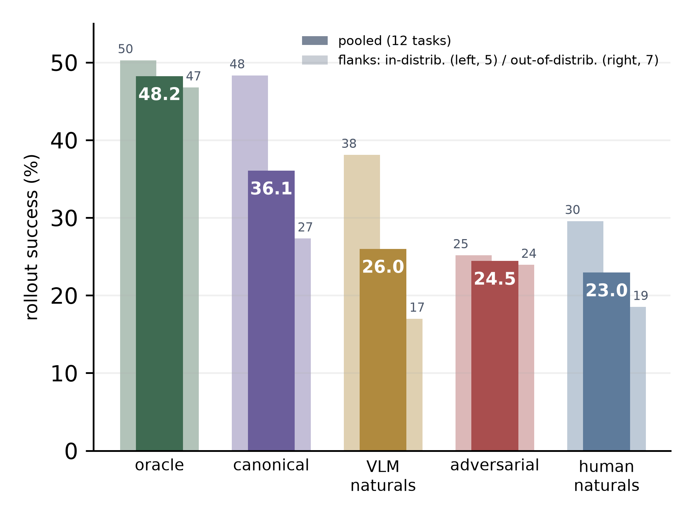
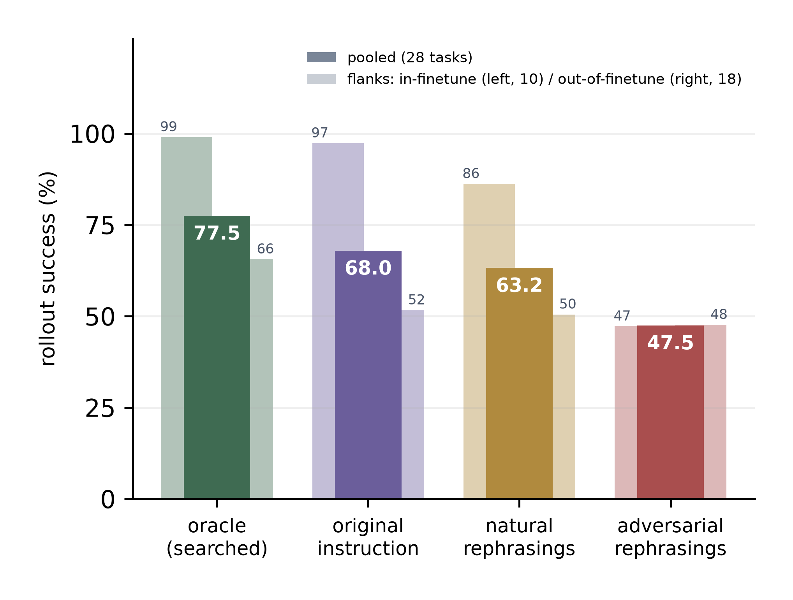
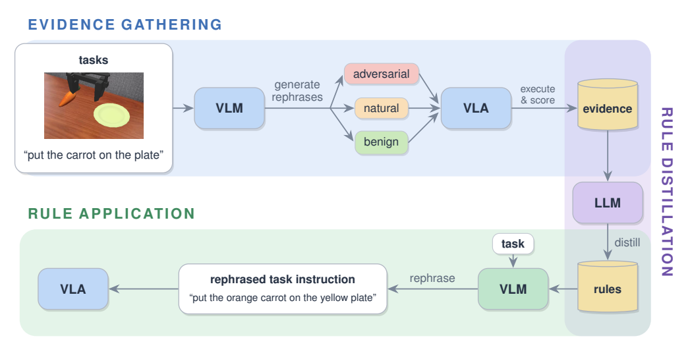
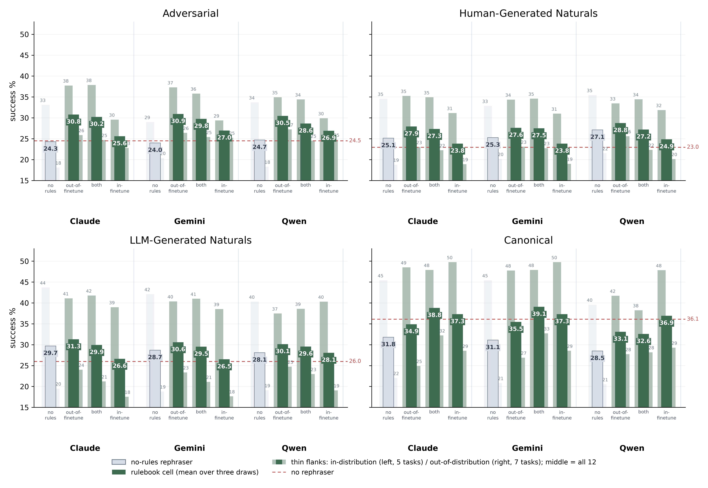

Characterizing and Mitigating Language Sensitivity in Vision-Language-Action Models
Anonymous authors · under review · paper (PDF)
A one-word edit to an instruction can move a VLA's success rate by tens of points. Measured over the same fixed scene layouts with common random seeds, so the wording is the only difference:
69% “purple eggplant goes on the sponge” vs. 8% “eggplant goes on the sponge”
69% “put the pepsi on the plate” vs. 25% “put the Pepsi on the plate”
100% “fire up the stove” vs. 6% “turn on the stove”
Single-edit swings — the figures from the paper, showing the largest significant swing per task and edit category (a subset of all the significant swings our searches found; the full set is in the companion repository). Dots are the phrases of one set; the filled dot is the best phrasing:

π0 on SIMPLER Bridge — 26 sets.

π0.5 on LIBERO — 15 sets.
An oracle phrase search shows how much headroom phrasing alone leaves a frozen policy — and that on LIBERO the policy attends to language only on tasks inside its finetuning set:

π0, 12 sealed Bridge tasks: oracle phrasing nearly closes the in- vs out-of-distribution gap.

π0.5, LIBERO: adversarial phrasing costs 50 points in-finetune and nothing measurable out-of-finetune.

Score many phrasings of a few training tasks by rolling them out; have a large language model distill the scored phrasings into ten to twenty natural-language rephrasing rules; at deployment, rewrite each incoming instruction once under the rules, before it reaches the frozen policy. No retraining, no per-step verification, zero-shot to unseen tasks.

On twelve held-out Bridge tasks the rules improve the frozen π0 by 16–27% relative across adversarial, VLM-generated, and human-written phrasings; the pipeline replicates on π0.5 + LIBERO (93.6% → 97.8% in-finetune).
More: rule snapshots · complete rulebooks, prompts, and swing data in the companion repository · the human-phrasing survey (static replica, with the task clips respondents saw).